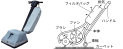
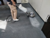
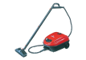

2026年
問題148 カーペット清掃用機械・器具に関する次の記述のうち，最も不適当なものはどれか．
(1)カーペットスイーパは，パイル内部のほこりを除去するのに適している．
(2)洗剤供給式床磨き機は，化学繊維のタフテッドカーペットの洗浄に適している．
(3)真空掃除機は，電気ファンによって機械内部に空気の低圧域を作り，ホース等を通じてほこりと空気を吸い込んで捕捉する機械である．
(4)アップライト型真空掃除機は，床を回転ブラシで掃きながら，ごみやほこりを機内に吸い込む構造である．
(5)スチーム洗浄機は，カーペットのしみ取りにも使われる．
2026年
問題148 正解（1） 頻出度AAA
カーペットスイーパ（2026-148-1図）は，パイル表面の粗ごみを除去するのに用いられる．
2026-148-1 カーペットスイーパ
繊維床に付着した土砂やほこりは時間の経過とともにパイルの中に沈みこむので，吸引力の強いアップライト型真空掃除機（2026-148-2図）などで吸引除去する．
2026-148-2図 アップライト型真空掃除機

左写真 出典 蔵王産業㈱
https://www.zaohnet.co.jp/products/spb/
-(2) 洗剤供給式の床磨き機は，一般のタンク式スクラバーマシンに比べ，カーペットの繊維による抵抗が増すため，カーペット専用のもの（低速回転）を使用する．この機械は，カーペットを敷いたままでシャンプークリーニングする方法として古くから開発され，普及している．ブラシが回転することによって，洗剤がカーペットのパイルにこすりつけられて発泡し，その泡によってクリーニングが行われる．洗浄効果は大きいが，パイルを損傷する恐れがあるので，ウールのウィルトンカーペット※よりは，化学繊維のタフテッドカーペット※等の洗浄に適している．泡は別の真空掃除機によって吸引除去する．2026-148-3図参照．
2026-48-3図 洗剤供給式の床磨き機によるカーペット洗浄

出典 シンテックサービス株式会社
https://www.shintech.biz/construction/766/
※ カーペットの種類2026-148-1表参照．
2026-148-1表 カーペットの種類
| ウィルトンカーペット | 18世紀中，イギリスウィルトン地方で始まったカーペット．パイル密度が細かくパイルの抜けがなく耐久性がある． 機械織りでパイル糸は純毛，厚手でしっかりしたカーペットだが，水分に弱く収縮を起こす．天然素材なのでメンテナンスは難しい． |
| タフテッドカーペット | 基布に刺繍のようにミシン針でパイルを刺し込んでゆき，パイルの抜けを防ぐため，裏面に合成ゴムラテックスを塗り，塩ビなどの化粧裏地を貼り付ける．アメリカで開発され，従来のカーペットの30倍の生産速度を誇る．アクリルやナイロンなどをパイル糸に使用したものが多く，オフィスなどのカーペットタイルに広く使われている．強度や磨耗性が高いが，静電気を帯びやすく，多量の水に対しては収縮を起こす． |
| ニードルパンチカーペット | ポリプロピレンなどを圧着した表面がフラットな不織カーペット．ウェブという短繊維を薄く広く伸ばしたものを重ね合わせ，多数のニードル（針）で突き刺してフェルト状にする．裏面は，ラテックスコーティングされ，カットが自由，価格も安価．丈夫であるが弾力性やデザイン性には劣る．しみは落ちにくい． |
-(5) スチーム洗浄機2026-148-3図参照．
2022-151-1図 スチーム洗浄機の例

出典 山崎産業株式会社 環境用品総合カタログ
https://catalog2.yamazaki-sangyo.co.jp/index.html